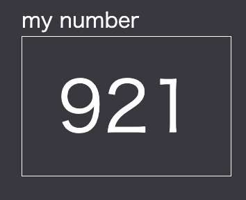
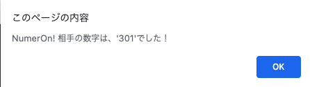

3桁の数字で選ばれる、「3つの数字」は0~9の中の異なる数字。
例）094、とか、184
⬇️
プレイヤーは、1ターンずつ数字を選んでいく。
⬇️
例えば、隠された数字が「123」、そして、あなたの選んだ数字が「921」だったとする。
この場合、「1EAT 1BITE」と結果が返ってきます。
⬇️
EAT：「場所も、数字も合っているものが存在します」の意味 （例の場合は、「2」）
BITE：「数字は合っているが、場所が違います」の意味 （例の場合は、「1」）
「1EAT 1BITE」返ってきた結果を元に何度も数字を当てるターンを繰り返して、隠された数字を当てます
⬇️
では、練習。
隠された数字が「123」。選んだ数字が「305」の場合は・・・
⬇️
そうです。
0EAT 1BITEと結果が返ってきます。
⬇️
3EAT 0BITEと結果が返ってくる。つまり、隠された数字を当てればゲームクリアです。
では早速始めてみましょう。